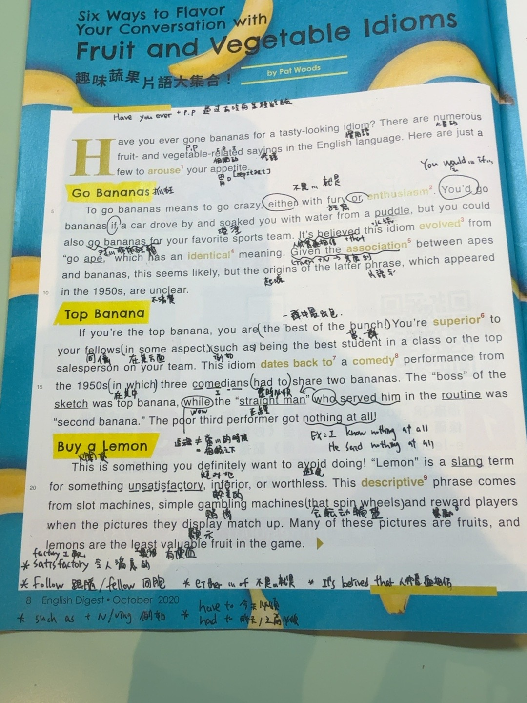

English Digest 蔬果慣用語
Pat Woods · English Digest · October 2020 · Page 8
第一部分｜文章完整中英文對照
1. Go Bananas（含導言）
English
Have you ever gone bananas for a tasty-looking idiom? There are numerous fruit- and vegetable-related sayings in the English language. Here are just a few to arouse your appetite. To go bananas means to go crazy, either with fury or enthusiasm. You’d go bananas if a car drove by and soaked you with water from a puddle, but you could also go bananas for your favorite sports team. It’s believed this idiom evolved from “go ape,” which has an identical meaning. Given the association between apes and bananas, this seems likely, but the origins of the latter phrase, which appeared in the 1950s, are unclear.
中文
你是否曾經對某個「看起來很可口」的慣用語感到非常著迷呢？英語裡有許多和水果、蔬菜有關的俗語，以下就介紹幾個，讓你開開胃、勾起興趣。「Go bananas」表示抓狂或興奮到失控，可能是因為極度憤怒，也可能是因為熱情高漲。假如一輛車從旁邊開過，把路上水坑的水濺得你全身濕透，你可能會氣得抓狂；但你也可能因為支持自己最喜愛的運動隊伍而興奮不已。一般認為，這個慣用語是由意思相同的「go ape」演變而來。考慮到猿猴和香蕉之間的聯想，這個說法似乎合理；不過，後面提到的「go ape」雖然在 1950 年代出現，它的真正起源仍不清楚。
2. Top Banana
English
If you’re the top banana, you are the best of the bunch! You’re superior to your fellows in some aspect, such as being the best student in a class or the top salesperson on your team. This idiom dates back to a comedy performance from the 1950s in which three comedians had to share two bananas. The “boss” of the sketch was top banana, while the “straight man” who served him in the routine was “second banana.” The poor third performer got nothing at all!
中文
如果你是「top banana」，就表示你是這群人中最出色、最重要的那一位！你可能在某個方面比同儕更優秀，例如是班上成績最好的學生，或是團隊中業績最好的業務員。這個慣用語可以追溯到 1950 年代的一場喜劇演出，當時三名喜劇演員得共用兩根香蕉。在那齣短劇裡，扮演「老大」的人被稱為「top banana」，而在固定表演橋段中負責配合他的正經搭檔，則是「second banana」（二號人物）。可憐的第三位表演者，最後什麼都沒有得到！
3. Buy a Lemon
English
This is something you definitely want to avoid doing! “Lemon” is a slang term for something unsatisfactory, inferior, or worthless. This descriptive phrase comes from slot machines, simple gambling machines that spin wheels and reward players when the pictures they display match up. Many of these pictures are fruits, and lemons are the least valuable fruit in the game.
中文
這絕對是你會想要避免的事情！「Lemon」在俚語中可以指令人不滿意、品質低劣或沒有價值的東西。這個生動的說法源自吃角子老虎機：那是一種簡單的賭博機器，輪盤會轉動，當機器顯示的圖案互相配對成功，就會給玩家獎勵。這類機器上的許多圖案都是水果，而檸檬在遊戲中是價值最低的水果，因此「buy a lemon」就引申為買到品質不佳、讓人失望的商品。
第二部分｜我的手寫筆記詳細整理
這裡不是文章摘要，而是把你寫在課本上的東西逐一記錄，並補上更完整的解釋
A. 導言與 Go Bananas
| 你標記的單字／片語 | 中文與延伸理解 |
|---|---|
| idiom | 慣用語，不能總是按照字面翻譯 |
| numerous | 許多的、大量的，比 many 稍正式 |
| related | 相關的，常搭配 related to |
| sayings | 俗語、常見說法 |
| arouse | 引起、喚起，如 arouse interest |
| appetite | 食慾、胃口，也可比喻興趣 |
| fury | 狂怒、暴怒，名詞 |
| enthusiasm | 熱情、熱忱，名詞 |
| soaked | 浸濕、濕透，原形 soak |
| puddle | 水坑、積水 |
| go ape | 抓狂、非常激動 |
| identical | 完全相同的，不只是相似 |
| association | 關聯、聯想 |
| origins | 起源、來源 |
| latter | 後者、後面提及的 |
| unclear | 不清楚的、不明確的 |
你特別寫下的文法 ①
Have you ever + P.P.?
先前對話將文章第一行上方的註記轉錄為這個公式，還在 gone 旁邊補上 P.P.
- Have you ever：你曾經有沒有……
- P.P.：Past Participle，過去分詞
- go → went → gone
- Have you ever gone bananas? 你曾經抓狂過嗎？
為什麼是 gone，而不是 went？
因為這裡是現在完成式，have 後面要接過去分詞，而不是一般過去式
你圈起來的文法 ②
either A or B
這裡的 either with fury or enthusiasm 表示可能因為暴怒，也可能因為極度興奮
例如：
- You can either call me or email me 你可以打電話給我，或寄電子郵件給我
- Either Monday or Tuesday is fine 星期一或星期二都可以
你圈起來的文法 ③
You’d go bananas if a car drove by ...
這是值得深入理解的假設句
| 結構 | 作用 |
|---|---|
| You'd = You would | 假設情況下「你會……」 |
| if | 如果、假如 |
| drove by | 車子開過去 |
| soaked you | 把你弄濕 |
重點是這裡的 drove 和 soaked 雖然使用過去式，卻是在描述假設，不表示事件真的已經發生
你標記的文法 ④
It’s believed (that) ...
完整寫法是 It is believed that ...
- It is believed：一般認為、據信
- that：引導後面的內容，有時可以省略
- evolved from：從……演變而來
你在旁邊補寫 that，這是很好的句型紀錄，因為它能幫你看出後面整句是被認為的內容
你圈起來的文法 ⑤
Given + 名詞
這裡的 Given 是「考慮到、鑑於」
課文：
Given the association between apes and bananas
意思是「考慮到猿猴與香蕉之間的關聯」
補充例句：
Given the weather, we should stay home
考慮到天氣狀況，我們應該待在家
B. Top Banana
| 你標記的單字／片語 | 中文與延伸理解 |
|---|---|
| the best of the bunch | 一群人當中最好的 |
| bunch | 一群、一串，例如一串香蕉 |
| superior | 更優秀的、較優越的 |
| fellows | 同儕、同伴 |
| in some aspect | 在某些方面 |
| such as | 例如 |
| dates back to | 可以追溯到 |
| comedy | 喜劇 |
| comedians | 喜劇演員 |
| in which | 在其中 |
| had to | 當時必須 |
| sketch | 短劇、喜劇小品 |
| while | 本文是「而、相較之下」 |
| straight man | 喜劇中的正經搭檔 |
| who served him | 配合他的那個人 |
| routine | 固定的表演橋段 |
| nothing at all | 完全什麼都沒有 |
你寫的文法 ①
such as + N / V-ing
這裡：
- N = Noun，名詞
- V-ing = 動名詞
- such as = 例如
課文使用：
such as being the best student in a class
為什麼用 being？
因為「成為班上最好的學生」整件事，被當成一個例子來說明
你寫的文法 ②
have to / had to
| 英文 | 中文 | 例句 |
|---|---|---|
| have to | 現在必須 | I have to work today |
| had to | 過去必須 | I had to work yesterday |
課文的 three comedians had to share two bananas 是在描述過去發生的表演，所以使用 had to
注意：had to 後面仍然接原形動詞 share
你圈起來的文法 ③
in which
原文是：
a comedy performance from the 1950s in which three comedians had to share two bananas
這裡 which 指前面的 performance
可以拆成：
- There was a comedy performance in the 1950s
- In that performance, three comedians had to share two bananas
作者把這兩個概念用 in which 連接起來，意思就是「在那場表演中」
你圈起來的文法 ④
while
這篇不是「當……的時候」，而是表示對比的「而」
- The boss was top banana
- The straight man was second banana
while 把兩種角色作比較
但要記得 while 也可以表示同時發生的動作，例如：
While I was reading, he was cooking
當我在閱讀時，他正在煮飯
你自己寫的例句，我完整保留：
- I know nothing at all 我完全不知道
- He said nothing at all 他完全沒有說任何話
nothing 本身已經表示否定，at all 是進一步強調「完全」
C. Buy a Lemon
| 你標記的單字／片語 | 中文與延伸理解 |
|---|---|
| definitely | 絕對地、肯定地 |
| avoid | 避免 |
| slang | 俚語 |
| unsatisfactory | 令人不滿意的 |
| inferior | 品質較差的、低劣的 |
| worthless | 沒有價值的 |
| descriptive | 描述性的 |
| gambling | 賭博 |
| that spin wheels | 會旋轉輪盤的 |
| reward | 獎勵 |
| display | 顯示 |
| match up | 配對成功、相符 |
| least | 最少的、最低程度的 |
| valuable | 有價值的 |
你特別寫的單字比較
| 英文 | 中文 | 需要注意 |
|---|---|---|
| factory | 工廠 | 名詞 |
| satisfactory | 令人滿意的 | 形容詞 |
| unsatisfactory | 令人不滿意的 | un- 表示否定 |
| satisfied | 感到滿意的 | 常用來形容人的感受 |
| satisfying | 令人滿足的 | 常形容事情或體驗 |
這裡很重要：satisfactory 雖然看起來有 factory 的字母組合，但兩者不是同一個意思，不能直接用 factory 的意思來拆解
你圈起來的文法 ①
avoid + V-ing
課文是：
you definitely want to avoid doing
拆開看：
- want to：想要
- avoid：避免
- doing：做某件事
正確：I avoid buying unnecessary things
錯誤：I avoid to buy unnecessary things
你框起來的文法 ②
that spin wheels
這裡是關係子句，補充說明前面的 machines
- machines：機器
- that spin wheels：會轉動輪盤的
- and reward players：並獎勵玩家
你劃線的文法 ③
the pictures they display
原本可以寫成：
the pictures that they display
這裡的 that 是關係代名詞，而且在子句裡作受詞，所以可以省略
意思是「它們所顯示的圖片」
這跟前面的 machines that spin wheels 不同，因為那裡的 that 是子句主詞，不能用相同方式直接省略
第三部分｜頁面最下方的補充筆記
我也在完整檔案內獨立保留這些，不會因為前面提過就刪除
| 你的手寫紀錄 | 要記住的差別 |
|---|---|
| follow / fellow | follow 跟隨；fellow 同儕、同伴 |
| satisfactory / factory | 令人滿意的／工廠 |
| either ... or ... | 不是……就是…… |
| It's believed that | 一般認為、據信 |
| such as + N / V-ing | 例如，後接名詞或動名詞 |
| have to / had to | 現在必須／過去必須 |
| Given + N | 考慮到某個條件 |
| You'd / if | 假設句中的 would 與 if |
| while | 本文表示對比，不是時間 |
| nothing at all | 完全什麼都沒有 |
這裡展示的是你的筆記重點和部分深入解析，下載檔案還另外包含原句拆解、更多例句、關係子句比較、單字易混淆辨析及完整 Codex 建檔規範
原始照片與手寫筆記

逐句教學與先前版本
我把你手寫在課本上的註記，整理成一份 Codex 專用英文學習筆記，包含完整英文原文、逐句中文翻譯、你圈起來的單字、文法公式及補充例句
對照你的筆記後，有幾個地方我特別幫你整理清楚：
- Have you ever + P.P.：問過去到現在是否有過某種經驗
- either ... or ...：不是……就是……，表示兩種可能
- while：這篇是「而、相較之下」，不是「當……的時候」
- follow / fellow：follow 是跟隨，fellow 是同伴、同儕
- satisfactory / unsatisfactory：令人滿意的／令人不滿意的
- have to / had to：必須／過去必須
另外，標題雖然寫 Six Ways，但你目前提供的這頁只有三個慣用語，我會先完整保留這一頁的內容，不自行補上其他三個
下載 Codex 英文學習筆記（Markdown）
含完整原文、中文翻譯、個人單字與文法筆記、例句及 Codex 教學指令
以下是可以直接複製的文章與學習筆記
English Learning Notes｜Unit 1
Six Ways to Flavor Your Conversation with Fruit and Vegetable Idioms
趣味蔬果片語大集合
作者：Pat Woods
來源：English Digest｜October 2020｜Page 8
學習範圍： Introduction、Go Bananas、Top Banana、Buy a Lemon
Part 1｜完整文章中英文對照
Introduction｜文章導言
① Have you ever gone bananas for a tasty-looking idiom?
你曾經對一個「看起來很美味」的慣用語感到著迷嗎？
② There are numerous fruit- and vegetable-related sayings in the English language.
英語中有許多與水果和蔬菜相關的俗語與說法
③ Here are just a few to arouse your appetite.
以下介紹其中幾個，讓你開開胃，也勾起你的興趣
我的單字筆記
| 單字 | 中文 |
|---|---|
| idiom | 慣用語、成語 |
| numerous | 許多的 |
| related | 相關的 |
| sayings | 俗語、說法 |
| arouse | 引起、喚起 |
| appetite | 食慾、胃口 |
| tasty-looking | 看起來美味的 |
我的文法筆記
Have you ever + P.P.?
現在完成式，詢問過去到現在是否有過某種經驗
- go → went → gone
- Have you ever been to Japan? 你去過日本嗎？
- Have you ever tried Italian food? 你吃過義大利料理嗎？
related to = 與……相關
arouse your appetite = 引起食慾，文章中帶有「引起興趣」的雙關意思
Section 1｜Go Bananas
中文意思：抓狂、興奮到失控
① 原文
To go bananas means to go crazy, either with fury or enthusiasm.
中文翻譯
Go bananas 的意思是變得瘋狂，可能是因為憤怒，也可能是因為太興奮或充滿熱情
② 原文
You’d go bananas if a car drove by and soaked you with water from a puddle, but you could also go bananas for your favorite sports team.
中文翻譯
如果有輛車從你身旁開過，把水坑裡的水濺到你身上，讓你全身濕透，你可能會氣到抓狂，但你也可能因為最喜歡的運動隊伍而興奮不已
③ 原文
It’s believed this idiom evolved from “go ape,” which has an identical meaning.
中文翻譯
一般認為，這個慣用語是從「go ape」演變而來，而 go ape 具有完全相同的意思
④ 原文
Given the association between apes and bananas, this seems likely, but the origins of the latter phrase, which appeared in the 1950s, are unclear.
中文翻譯
考慮到猿猴與香蕉之間的關聯，這個說法似乎合理，但後面提到的 go ape 這個片語雖然出現在 1950 年代，其真正起源仍不清楚
我的單字筆記
| 單字／片語 | 中文 |
|---|---|
| go bananas | 抓狂、非常興奮 |
| go crazy | 發狂、失控 |
| either ... or ... | 不是……就是…… |
| fury | 狂怒、暴怒 |
| enthusiasm | 熱情、熱忱 |
| You'd | You would |
| drove by | 開車經過 |
| soaked | 浸濕、弄濕 |
| puddle | 水坑、積水 |
| go ape | 抓狂、發狂 |
| believed | 相信、認為 |
| evolved | 演變、發展 |
| identical | 完全相同的 |
| given | 考慮到、鑑於 |
| association | 關聯、聯繫 |
| apes | 猿、類人猿 |
| likely | 有可能的 |
| origins | 起源、來源 |
| latter | 後者 |
| phrase | 片語 |
| appeared | 出現 |
| unclear | 不清楚的 |
我的文法筆記
1. either A or B
不是 A 就是 B，或者 A 或 B
例句：You can have either tea or coffee
你可以喝茶或咖啡
2. You'd = You would
假設句：
If + 主詞 + 過去式, 主詞 + would + 原形動詞
例句：If I had more time, I would travel more
如果我有更多時間，我會多去旅行
3. It's believed (that) ...
一般認為、據信
屬於被動語態，後面的 that 可以省略
4. evolve from
從……演變而來
5. Given + 名詞片語
考慮到、鑑於
例句：Given the weather, we should stay home
考慮到天氣，我們應該待在家
6. which has an identical meaning
which 是關係代名詞，補充說明前面的 go ape
7. the latter phrase
指前面兩個片語之中後提到的那個，也就是 go ape
Section 2｜Top Banana
中文意思：頭號人物、領導者、團體中的佼佼者
① 原文
If you’re the top banana, you are the best of the bunch!
中文翻譯
如果你是 Top Banana，就表示你是這群人中最優秀、最重要的那個人
② 原文
You’re superior to your fellows in some aspect, such as being the best student in a class or the top salesperson on your team.
中文翻譯
你在某些方面比同儕更優秀，例如是班上最優秀的學生，或是團隊中業績最好的業務人員
③ 原文
This idiom dates back to a comedy performance from the 1950s in which three comedians had to share two bananas.
中文翻譯
這個慣用語可以追溯到 1950 年代的一場喜劇表演，當時三名喜劇演員必須共用兩根香蕉
④ 原文
The “boss” of the sketch was top banana, while the “straight man” who served him in the routine was “second banana.”
中文翻譯
在這場短劇中，扮演老大的人被稱為 Top Banana，而在表演中負責配合他的正經搭檔，則被稱為 Second Banana，也就是二號人物
⑤ 原文
The poor third performer got nothing at all!
中文翻譯
可憐的第三位表演者，最後什麼都沒有得到！
我的單字筆記
| 單字／片語 | 中文 |
|---|---|
| top banana | 頭號人物、領導者 |
| the best of the bunch | 一群當中最好的 |
| bunch | 一群、一串 |
| superior | 較優秀的 |
| superior to | 比……優秀 |
| fellows | 同儕、同伴 |
| aspect | 方面、層面 |
| in some aspect | 在某個方面 |
| such as | 例如 |
| salesperson | 業務人員 |
| dates back to | 追溯到 |
| comedy | 喜劇 |
| performance | 表演、演出 |
| comedians | 喜劇演員 |
| share | 共用、分享 |
| sketch | 短劇、喜劇小品 |
| while | 而、相較之下 |
| straight man | 喜劇中的正經搭檔 |
| served | 配合、服務 |
| routine | 固定表演橋段 |
| second banana | 第二號人物、副手 |
| performer | 表演者 |
| nothing at all | 完全沒有 |
我的文法筆記
1. the best of the bunch
一群人當中最好的
bunch 本來可以指「一串香蕉」，也可以形容「一群人」，所以這裡有雙關語
2. superior to
比……更好、更優秀
正確：superior to
錯誤：superior than
3. such as + N / V-ing
意思：例如
例句：I enjoy outdoor activities, such as swimming and hiking
我喜歡戶外活動，例如游泳和健行
4. date back to + 時間
意思：追溯到
例句：This building dates back to the 1800s
這棟建築可以追溯到 19 世紀
5. in which
意思：在其中
本文指「在那場喜劇表演中」
6. have to / had to
- have to：必須
- had to：過去必須
例句：
I have to work today
我今天必須工作
I had to work yesterday
我昨天必須工作
7. while
這篇文章中的 while 是「而、相較之下」，表示對比
8. who served him
who 是關係代名詞，修飾前面的 the straight man
9. nothing at all
意思：完全什麼都沒有
我的補充例句：
- I know nothing at all
我完全不知道 - He said nothing at all
他完全沒有說任何話
Section 3｜Buy a Lemon
中文意思：買到爛貨、買到品質不良的商品
① 原文
This is something you definitely want to avoid doing!
中文翻譯
這絕對是你想要避免做的事情！
② 原文
“Lemon” is a slang term for something unsatisfactory, inferior, or worthless.
中文翻譯
Lemon 是一個俚語，用來形容令人不滿意、品質低劣或沒有價值的東西
③ 原文
This descriptive phrase comes from slot machines, simple gambling machines that spin wheels and reward players when the pictures they display match up.
中文翻譯
這個描述性的片語源自吃角子老虎機，那是一種簡單的賭博機器，會轉動輪盤，當機器顯示的圖片相互匹配時，就會給玩家獎勵
④ 原文
Many of these pictures are fruits, and lemons are the least valuable fruit in the game.
中文翻譯
這些圖案當中有許多是水果，而檸檬是這個遊戲中價值最低的水果
我的單字筆記
| 單字／片語 | 中文 |
|---|---|
| definitely | 肯定地、絕對地 |
| avoid | 避免 |
| slang | 俚語 |
| term | 詞語、術語 |
| unsatisfactory | 令人不滿意的 |
| inferior | 品質較差的、劣質的 |
| worthless | 沒有價值的 |
| descriptive | 描述性的 |
| phrase | 片語 |
| slot machine | 吃角子老虎機 |
| gambling | 賭博 |
| spin | 旋轉 |
| wheel | 輪子、轉盤 |
| reward | 獎勵 |
| player | 玩家 |
| display | 顯示、展示 |
| match up | 配對成功、相符 |
| least | 最少的、最低程度的 |
| valuable | 有價值的 |
我的文法筆記
1. avoid + V-ing
避免做某件事情
正確：avoid doing
錯誤：avoid to do
例句：I avoid eating too much sugar
我避免攝取過多糖分
2. 字首與字尾
satisfactory：令人滿意的
un + satisfactory = unsatisfactory
令人不滿意的
worth + less = worthless
沒有價值的
3. that spin wheels and reward players
關係子句，修飾 machines
意為「會轉動輪盤並獎勵玩家的機器」
4. the pictures they display
完整結構：
the pictures (that / which) they display
意思：機器所顯示的圖片
5. match up
相符、配對成功
6. the least + 形容詞
表示程度最低、最不……
- valuable：有價值的
- more valuable：更有價值的
- most valuable：最有價值的
- least valuable：價值最低的
Part 2｜我的手寫補充筆記總整理
1. 容易搞混的單字
| 英文 | 中文 |
|---|---|
| follow | 跟隨、遵循 |
| fellow | 同伴、同儕 |
| satisfactory | 令人滿意的 |
| unsatisfactory | 令人不滿意的 |
| factory | 工廠 |
| inferior | 較差的、品質低劣的 |
| superior | 較優秀的 |
| worthless | 沒有價值的 |
| valuable | 有價值的 |
| fury | 憤怒、暴怒 |
| enthusiasm | 熱情、熱忱 |
注意：follow 和 fellow 拼字相近，但意思不同；factory 與 satisfactory 也不是同一個字根
2. 我的文法公式
| 公式 | 用途 |
|---|---|
| Have you ever + P.P.? | 詢問過去到現在的經驗 |
| either A or B | 不是 A 就是 B |
| If + 過去式, would + 原形動詞 | 假設情況 |
| It's believed (that) ... | 據信、一般認為 |
| Given + 名詞片語 | 考慮到、鑑於 |
| such as + N / V-ing | 例如 |
| have to / had to | 必須／過去必須 |
| date back to | 追溯到 |
| superior to | 比……更優秀 |
| avoid + V-ing | 避免做某事 |
| nothing at all | 完全什麼都沒有 |
| the least + 形容詞 | 程度最低、最不…… |
Part 3｜三個慣用語總結
| Idiom | 中文意思 | 使用情境 |
|---|---|---|
| Go Bananas | 抓狂、非常興奮 | 情緒激動、興奮或憤怒 |
| Top Banana | 頭號人物、領導者 | 團隊中的主導者或佼佼者 |
| Buy a Lemon | 買到爛貨、瑕疵品 | 買到品質不良的商品 |
Part 4｜Codex 後續教學要求
請將這份文章與筆記建立成我的個人英文學習資料，並依照以下方式持續更新：
- 每篇文章保留英文原文及逐句中文翻譯
- 保留我自己寫下的英文單字、文法及中文註記
- 把我的錯誤觀念與正確用法分開整理
- 每個單字可以持續累積例句，不要重複建立
- 每段文章要能單獨進行英文閱讀、單字練習和文法測驗
- 未來提供新文章或手寫筆記圖片時，沿用相同架構
- 若有英文原文尚未提供，不要自行編造後續課文
學習目標： 從英文閱讀中累積字彙、理解句型結構，逐漸提升獨立閱讀英文文章的能力
這份已經可以直接貼到 Codex 作為英文學習知識庫的第一篇，之後拍新頁面，我們就能沿用相同架構往下累積
第四段｜Buy a Lemon 🍋
Buy a Lemon = 買到瑕疵品、劣質商品、買到爛貨
這裡的 Lemon 不是指真的買了一顆檸檬，而是英文口語中用來形容「品質很差、不值得購買的商品」
我們一樣逐句學習，包含中文翻譯、單字、片語及文法
Sentence 1
This is something you definitely want to avoid doing!
中文：這絕對是你會想要避免做的事情！
| 單字／片語 | 中文意思 |
|---|---|
| something | 某件事情、某樣東西 |
| definitely | 絕對地、肯定地 |
| want to | 想要 |
| avoid | 避免 |
| doing | 做（動名詞） |
| avoid doing | 避免做某件事情 |
文法重點：avoid + V-ing
avoid 後面接動詞時，要使用動名詞（V-ing），而不是 to + 原形動詞
- I avoid eating too much sugar 我避免吃太多糖
- I avoid to eat too much sugar
另外，definitely 是很常用的副詞
例如：
I definitely want to visit Italy
我真的很想去義大利
Sentence 2
“Lemon” is a slang term for something unsatisfactory, inferior, or worthless.
中文：「Lemon」是一個俚語，用來形容令人不滿意、品質低劣或沒有價值的東西
| 單字／片語 | 中文意思 |
|---|---|
| slang | 俚語、口語用法 |
| term | 術語、詞語 |
| slang term | 俚語用詞 |
| unsatisfactory | 不令人滿意的 |
| inferior | 品質低劣的、較差的 |
| worthless | 沒有價值的、不值錢的 |
| something | 某個東西、某件事情 |
這句有三個形容詞非常值得比較
| 單字 | 重點差別 |
|---|---|
| unsatisfactory | 結果不符合期待 |
| inferior | 品質或等級比別人差 |
| worthless | 幾乎沒有價值 |
例如：
- The service was unsatisfactory 這項服務令人不滿意
- This product is inferior to that one 這個產品比那個品質差
- This broken phone is worthless 這支壞掉的手機毫無價值
文法重點：字首與字尾
unsatisfactory 可以拆成：
- un-：表示「不」
- satisfactory：令人滿意的
worthless 可以拆成：
- worth：價值
- -less：沒有、缺乏
所以 worthless 就是「沒有價值的」
Sentence 3
This descriptive phrase comes from slot machines, simple gambling machines that spin wheels and reward players when the pictures they display match up.
中文：這個具有描述性的片語源自吃角子老虎機，那是一種簡單的賭博機器，會轉動輪盤，當機器顯示的圖片相互匹配時，就會給玩家獎勵
這句比較長，我先幫你拆成幾個部分
| 英文 | 中文 |
|---|---|
| This descriptive phrase | 這個描述性的片語 |
| comes from slot machines | 源自吃角子老虎機 |
| simple gambling machines | 簡單的賭博機器 |
| that spin wheels | 會轉動輪盤 |
| and reward players | 並獎勵玩家 |
| when the pictures they display match up | 當機器顯示的圖片相互匹配時 |
重要單字
| 單字／片語 | 中文意思 |
|---|---|
| descriptive | 描述性的 |
| phrase | 片語 |
| come from | 來自、源自 |
| slot machine | 吃角子老虎機 |
| gambling | 賭博 |
| machine | 機器 |
| spin | 旋轉、轉動 |
| wheel | 輪子、轉盤 |
| reward | 獎勵、給予獎賞 |
| player | 玩家 |
| display | 顯示、展示 |
| match up | 相符、配對成功 |
文法重點 1：that + 動詞
that spin wheels and reward players
這是關係子句，用來形容前面的 machines
意思是「會轉動輪盤並獎勵玩家的機器」
文法重點 2：when
when the pictures they display match up
表示「當它們顯示的圖片配對成功時」
這裡的 they display 也是修飾 pictures 的關係子句，省略了 that 或 which
原本可以寫成：
the pictures that they display
也就是「它們所顯示的圖片」
Sentence 4
Many of these pictures are fruits, and lemons are the least valuable fruit in the game.
中文：這些圖片當中有許多都是水果，而檸檬是遊戲中價值最低的水果
| 單字／片語 | 中文意思 |
|---|---|
| many of | ……當中的許多 |
| these | 這些 |
| pictures | 圖片 |
| fruits | 水果（複數） |
| lemons | 檸檬（複數） |
| least | 最少的、最低程度的 |
| valuable | 有價值的 |
| least valuable | 最沒有價值的 |
| in the game | 在遊戲當中 |
文法重點：the least + 形容詞
這是形容詞的最高級形式，表示「最不……的」
例如：
- valuable：有價值的
- more valuable：更有價值的
- most valuable：最有價值的
- least valuable：最沒有價值的
注意 least valuable 不完全等於 worthless，前者是相對價值最低，後者是沒有價值
用圖片記住 Buy a Lemon
image_group{"query":["close up fresh whole yellow lemon on neutral simple background photography"],"aspect_ratio":"4:3","layout":"carousel","num_per_query":1}
Lemon
字面意思：檸檬
image_group{"query":["old broken down car on road with hood open engine problem photograph"],"aspect_ratio":"4:3","layout":"carousel","num_per_query":1}
A lemon
俚語意思：瑕疵品、爛貨
例如：
I bought a used car, but it turned out to be a lemon.
我買了一輛中古車，結果發現是輛問題一堆的爛車
其中 turn out to be 也是很實用的片語，意思是「結果證明是……」
第四段單字複習
這一段的單字比前面更抽象，建議先熟悉這 10 個
單字練習卡 /
[上一個]
這段你最需要記住的三個片語
- Buy a lemon — 買到瑕疵品、爛貨
- Avoid + V-ing — 避免做某事
- Turn out to be — 結果發現是……
照片這一頁到這裡就結束了，後面的內容在下一頁
你可以再拍下一頁給我，我會繼續用同樣的方式教你，包含逐句翻譯、重要單字、片語與文法解析
第三段｜Top Banana
Top Banana = 領導者、最重要的人、團隊中的頭號人物
這段主要介紹一個有趣的英文慣用語，以及它在 1950 年代喜劇表演中的由來
我們一樣逐句翻譯，拆解單字、片語及文法
Sentence 1
If you're the top banana, you are the best of the bunch!
中文：如果你是 Top Banana，就代表你是這群人當中最優秀、最重要的那一個！
| 單字／片語 | 中文意思 |
|---|---|
| if | 如果 |
| you're | you are 的縮寫 |
| top banana | 頭號人物、領導者 |
| the best | 最好的、最優秀的 |
| bunch | 一群、一串（如一串香蕉） |
| the best of the bunch | 一群人或事物中最好的 |
文法重點：the best of the bunch
best是 good 的最高級bunch可以指一串香蕉，也能指一群人the best of the bunch是「一群之中最出色的」
例如：
She's the best of the bunch
她是這群人當中最優秀的
這句有雙關語，因為 bunch 可以指一串香蕉，也可以指一群人
Sentence 2
You're superior to your fellows in some aspect, such as being the best student in a class or the top salesperson on your team.
中文：你在某些方面比其他同儕更優秀，例如你可能是班上最優秀的學生，或是團隊中業績最好的業務人員
| 單字／片語 | 中文意思 |
|---|---|
| superior | 更優秀的、較優越的 |
| superior to | 比……優秀 |
| fellows | 同儕、同伴 |
| in some aspect | 在某些方面 |
| such as | 例如 |
| being | 成為、身為 |
| salesperson | 業務人員、銷售員 |
| top salesperson | 頂尖業務人員 |
文法重點 1：superior to
這是一個固定搭配
A is superior to B
表示 A 比 B 更優秀
注意，不是 superior than
例如：
This product is superior to that one
這項產品比那項產品更優秀
文法重點 2：such as + 名詞／V-ing
such as 是「例如」，後面可以接名詞或動名詞
例如：
- I enjoy sports such as swimming and tennis 我喜歡游泳和網球等運動
- She has leadership skills, such as managing a team 她具備領導能力，例如管理團隊
Sentence 3
This idiom dates back to a comedy performance from the 1950s in which three comedians had to share two bananas.
中文：這個慣用語可以追溯到 1950 年代的一場喜劇表演，當時三位喜劇演員必須共用兩根香蕉
| 單字／片語 | 中文意思 |
|---|---|
| idiom | 慣用語 |
| dates back to | 追溯到、始於 |
| comedy | 喜劇 |
| performance | 表演、演出 |
| comedian | 喜劇演員 |
| in which | 在其中 |
| had to | 當時必須 |
| share | 分享、共用 |
| the 1950s | 1950 年代 |
文法重點 1：date back to
這是文章中很值得記住的片語，表示某件事情的起源可以追溯到某個時期
例如：
This building dates back to the 1800s
這棟建築可以追溯到 19 世紀
文法重點 2：in which
這裡的 in which 指「在那場喜劇表演中」
你可以先拆成：
- This idiom dates back to a comedy performance from the 1950s
- In that performance, three comedians had to share two bananas
作者用 in which 把兩句合併成一句
文法重點 3：had to
have to 的過去式，表示「當時必須」
- I have to work today 我今天必須工作
- I had to work yesterday 我昨天必須工作
Sentence 4
The “boss” of the sketch was top banana, while the “straight man” who served him in the routine was “second banana.”
中文：在這場短劇中，扮演老大的人被稱為 Top Banana，而在表演中負責配合他的正經角色則被稱為 Second Banana
| 單字／片語 | 中文意思 |
|---|---|
| boss | 老闆、領導者 |
| sketch | 短劇、喜劇小品 |
| while | 而、相較之下 |
| straight man | 喜劇中的正經搭檔、捧哏角色 |
| served | 服務、協助、配合 |
| routine | 固定表演橋段、表演節目 |
| second banana | 二號人物、副手 |
文法重點 1：while
這裡的 while 不是「當……的時候」，而是「而、相較之下」
例如：
I like coffee, while my sister prefers tea
我喜歡咖啡，而我妹妹比較喜歡茶
文法重點 2：who served him
這是一個關係子句，用來補充說明前面的 the straight man
- who：指人
- served：配合、協助
- him：指前面的老大角色
Sentence 5
The poor third performer got nothing at all!
中文：可憐的第三位表演者，結果什麼都沒有得到！
| 單字／片語 | 中文意思 |
|---|---|
| poor | 可憐的（這裡不是貧窮） |
| third | 第三個 |
| performer | 表演者、演出者 |
| got | 得到（get 的過去式） |
| nothing | 什麼都沒有 |
| at all | 完全、根本 |
文法重點：nothing at all
at all 在這裡用來加強否定語氣
例如：
- I know nothing at all 我完全不知道
- He said nothing at all 他什麼都沒說
本段必學 10 個單字與片語
單字複習卡 /
[上一個]
這段你要真正理解的意思
Top Banana 不是真的在講香蕉，而是用香蕉比喻一個團體中的人物地位
- Top Banana：老大、頭號人物
- Second Banana：副手、二號人物
- The best of the bunch：一群之中最優秀的
下一段是 Buy a Lemon，意思是「買到品質很差、不值得的東西」，也很適合日常英文使用
[繼續第四段 Buy a Lemon]
我們接著學第二段 Go Bananas（抓狂、興奮到失控）
這段比第一段長，我幫你拆成 4 句，每一句都有中文翻譯、單字及文法解析
第二段｜Go Bananas
Sentence 1
To go bananas means to go crazy, either with fury or enthusiasm.
中文：Go bananas 的意思是變得瘋狂，可能是因為憤怒，也可能是因為太興奮
| 單字／片語 | 中文意思 |
|---|---|
| go bananas | 抓狂、興奮到失控 |
| mean | 意思是、代表 |
| go crazy | 發狂、失控 |
| either ... or ... | 不是……就是…… |
| fury | 狂怒、暴怒 |
| enthusiasm | 熱情、熱忱 |
文法：either A or B
表示「不是 A，就是 B」，用來連接兩種可能性
例如：
- You can have either tea or coffee 你可以喝茶或咖啡
- She was either angry or excited 她不是生氣，就是很興奮
這句的 To go bananas 是不定詞片語，在句中當主詞
Sentence 2
You’d go bananas if a car drove by and soaked you with water from a puddle, but you could also go bananas for your favorite sports team.
中文：如果一輛車經過，把路邊水坑裡的水濺得你全身濕透，你一定會氣到抓狂，但你也可能因為自己最喜歡的運動隊伍而興奮不已
| 單字／片語 | 中文意思 |
|---|---|
| You'd | You would 的縮寫 |
| drove by | 開車經過（drive by 的過去式） |
| soak | 浸濕、使濕透 |
| soak someone with water | 用水把某人弄濕 |
| puddle | 水坑、積水 |
| could | 可能、能夠 |
| favorite | 最喜歡的 |
| sports team | 運動隊伍 |
文法：You would ... if ...
這句在描述假設情境
You would go bananas if a car drove by.
假如有車開過去，你會抓狂
這裡的 drove 雖然是過去式，但整句不一定是在描述過去，而是在表達假設
另外要特別記住 go bananas for，在這裡表示「對……非常狂熱」
Sentence 3
It's believed this idiom evolved from “go ape,” which has an identical meaning.
中文：一般認為，這個慣用語是從「go ape」演變而來，而兩者具有相同的意思
| 單字／片語 | 中文意思 |
|---|---|
| It's believed | 據信、一般認為 |
| idiom | 慣用語 |
| evolved | 演變、逐漸發展 |
| evolve from | 從……演變而來 |
| go ape | 抓狂、興奮到失控 |
| which | 在這裡指前面的 go ape |
| identical | 完全相同的 |
| meaning | 意義、意思 |
文法：It's believed (that) ...
是一種被動語態，表示「人們普遍相信……」
例如：
- It's believed that exercise is good for health 一般認為運動有益健康
- It's believed that the story is true 據信這個故事是真的
另一個重點是 which has an identical meaning
這是一個關係子句，用來補充說明前面的 go ape
Sentence 4
Given the association between apes and bananas, this seems likely, but the origins of the latter phrase, which appeared in the 1950s, are unclear.
中文：考慮到猿猴和香蕉之間的關聯，這種說法似乎很合理，但較後提到的「go ape」這個片語，其起源仍不清楚，而它是在 1950 年代出現的
| 單字／片語 | 中文意思 |
|---|---|
| given | 考慮到、鑑於 |
| association | 關聯、聯繫 |
| between A and B | A 與 B 之間 |
| apes | 猿、類人猿 |
| seem | 似乎、看起來 |
| likely | 有可能的 |
| origin | 起源、來源 |
| latter | 後者的、較後提及的 |
| phrase | 片語 |
| appeared | 出現（appear 的過去式） |
| 1950s | 1950 年代 |
| unclear | 不清楚的、不明確的 |
文法重點 1：Given + 名詞
這裡的 Given 不是「被給予」，而是「考慮到」
- Given the weather, we should stay home 考慮到天氣狀況，我們應該待在家
文法重點 2：the latter
用來指前面提到的兩個事物中的「後者」
例如：
I like coffee and tea, but I prefer the latter
我喜歡咖啡和茶，但我比較喜歡後者（茶）
第二段最重要的 8 個單字
單字複習 /
[上一個]
這段我最希望你記住的是 go bananas、either ... or ...、It's believed、evolve from、Given，它們在日常英語或英文文章裡都很實用
接下來是第三段 Top Banana，它其實是在介紹「某個團體中最重要、最有地位的人」，也有不少值得學的單字
[繼續第三段 Top Banana]